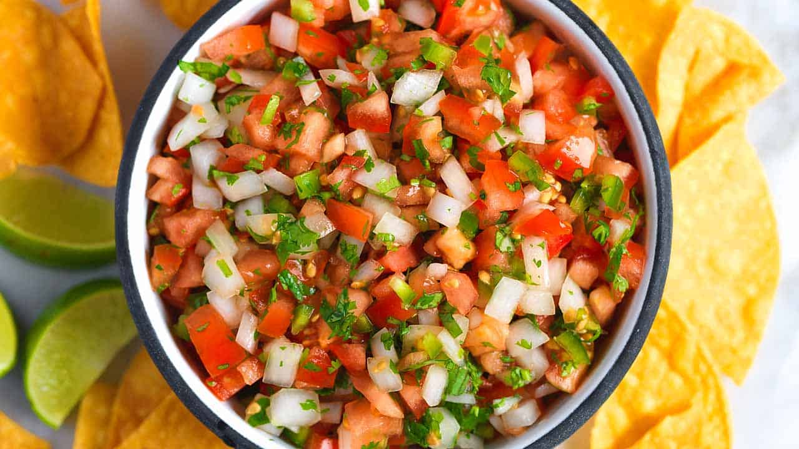

Pico De Gallo Recipe

Description
A good Pico de Gallo is easy to make and will impress your friends and family.
Beware, everyone will always want you to make this for them at every event.
Ingredients
- Ripe Roma Tomatoes
- Ripe Beefcake Tomatoes
- Fresh Cilantro
- Sea Salt
- Fresh Ground Pepper
- Ground Ceyanne pepper
- Ground Chili Powder
- Whole White Onion
- Fresh Bulb of Garlic
- Whole Red Onion
- Fresh Green Onion
- Whole Lime
- Whole Lemon
- Fresh Whole Jalepeňo Pepper
Steps
- Cut tomatoe ends off and dice tomatoes and put into large bowl.
- Chop garlic bulbs or use garlic press into bowl with tomatoes
- Chop white, red, and green onions and add to bowl
- Chop Jalapeňo into small pieces and add to bowl. (Small amount for flavor, more for spicy heat.)
- Add salt, ground pepper, chili powder, ceyanne pepper to taste.
- Cut lime and lemon in half then squeeze entire lime and entire lemon into bowl. Throw into bowl after squeeze.
- Chop cilantro and add to bowl
- Stir everything together.
- The longer it sits the more the flavors come out.
- Grab some chips or make a dish to add Pico to and chow down!